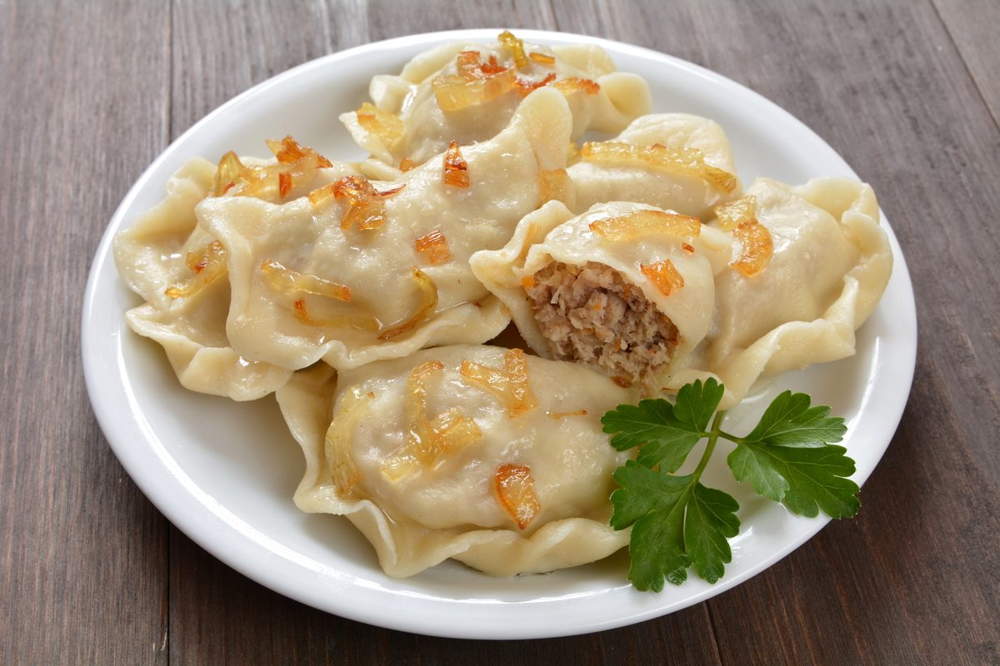

W polskich domach w czasie Świąt Bożego Narodzenia króluje tradycyjna, wigilijna kolacja. Na stole pojawia się dwanaście potraw, co symbolizuje dwanaście miesięcy w roku. Jednym z najważniejszych dań jest barszcz z uszkami, który jest podstawą wigilijnej wieczerzy. Oprócz tego nie może zabraknąć karpia, pierogów z kapustą i grzybami oraz kompotu z suszu. W wielu domach serwuje się także kutia i makowiec, które są tradycyjnymi deserami wigilijnymi.
Choć Boże Narodzenie jest obchodzone na całym świecie, tradycje kulinarne różnią się w zależności od regionu. W Anglii popularne jest pieczone mięso, a zwłaszcza indyk z różnymi dodatkami. W Hiszpanii na stole pojawia się turrón, czyli tradycyjna czekolada z migdałami, a w Niemczech popularne są pierniki i niemieckie kiełbaski. We Włoszech często jada się panettone, czyli włoską babkę świąteczną, a w Australii na Boże Narodzenie jada się potrawy grillowane, bo w tym okresie panuje tam lato.
Święta to również czas słodkości! W Polsce królują pierniki, makowiec oraz sernik. W Anglii popularne są puddingi świąteczne, które mają w sobie różne bakalie, a w Stanach Zjednoczonych nie może zabraknąć ciasta dyniowego oraz cukierków cynamonowych. W Włoszech, obok panettone, serwuje się także struffoli - małe pączki w syropie miodowym.
Potrawy świąteczne mają głęboką symbolikę i są nieodłącznym elementem tradycji Bożego Narodzenia. Niezależnie od regionu, potrawy te łączą ludzi przy wspólnym stole, tworząc atmosferę ciepła i rodzinnej bliskości. To także czas, kiedy możemy delektować się wyjątkowymi smakami, które przygotowujemy tylko raz w roku.
